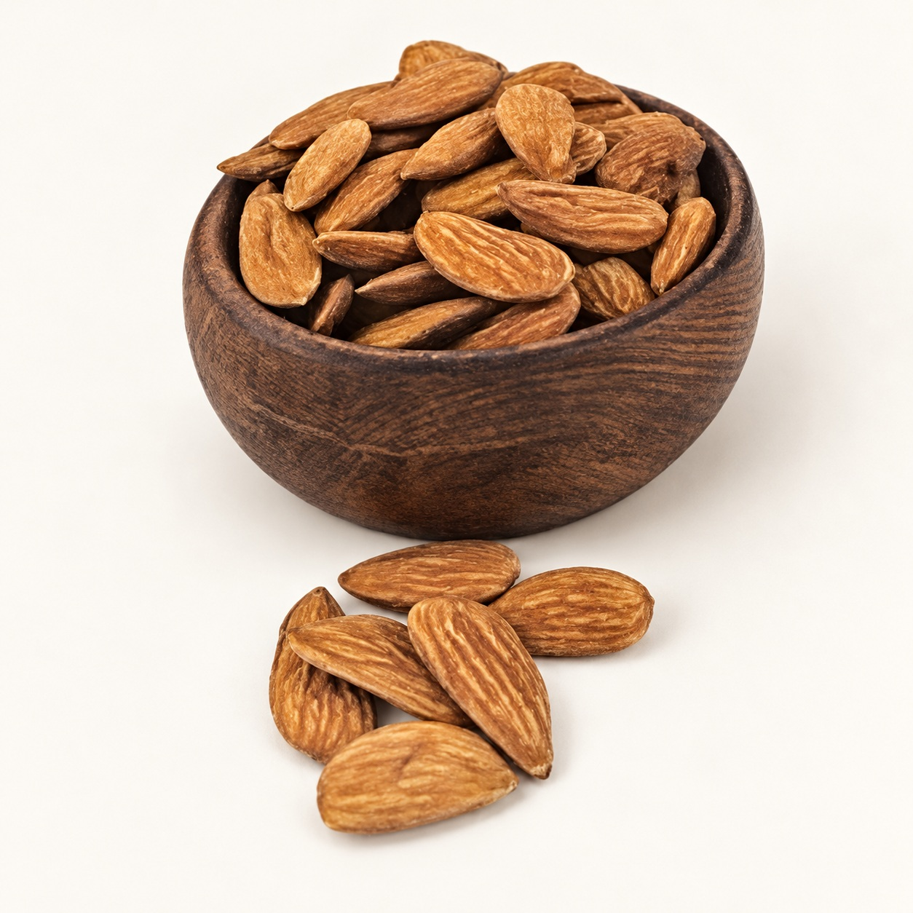

Vitamin E & cell protection
25.6 mg vitamin E
Helps protect cells from oxidative damage and supports normal immune function.
Discover Iranian Mamra almonds — a regional identity, a distinctive kernel and a place in everything from a simple handful to memorable sweets.
Follow the story ↓
Mamra, also sold as Mamra Badam, has a familiar place in specialty dry-fruit assortments. This collection features Iranian Mamaei almonds from Chaharmahal & Bakhtiari: skin-on kernels in golden-brown tones, with visible ridges and naturally individual shapes.
Their appeal reaches beyond the snack bowl. Enjoy whole kernels with dried fruit, blend prepared almonds into badam milk, or grind them into pastes for sweets and desserts. With plant protein, fibre, vitamin E and predominantly unsaturated fats in the general almond profile, they bring nourishment as well as flavor to everyday food.
Roasted into bread. Delivered to royal tables. Shared in everyday food. Iran’s almond tradition began long before the modern premium nut aisle.
Plant protein, fibre, unsaturated fats, vitamin E and minerals. A familiar ingredient with a substantial nutritional profile.
| Nutrient | Per 100 g |
|---|
General almond reference · per 100 g
Helps protect cells from oxidative damage and supports normal immune function.
Mostly unsaturated fats, including oleic acid. Almonds are naturally cholesterol-free.
A useful plant-protein ingredient for everyday snacks, nut blends and recipes.
Fibre, protein and fats can help make a measured handful a satisfying snack.
Calcium supports bones; magnesium contributes to normal muscle and nerve function.
Clinical studies of almonds support modest LDL-cholesterol reductions within a balanced diet.
Mamaei is part of the almond-growing landscape of Chaharmahal & Bakhtiari, including Saman. This regional identity gives specialty assortments a clear Iranian origin story.
Golden-brown skin, pronounced lengthwise ridges and often flattened, irregular kernels give Mamaei its recognizable appearance. Natural variation in shape and size is part of the collection; grading separates the size selections.
A 2011 comparison of 25 almond genotypes and cultivars reported higher oil in local Iranian cultivars, including Mamaei, than in most foreign commercial cultivars compared.
Each grade is a size selection of Mamaei almonds. Compare the reference images and supplier size codes below; the grade names do not indicate a different variety.
Retouched supplier reference images; not to scale. Size codes are reproduced as supplied.
of world tree-nut consumption
in 2024 · all almond varieties
Almonds were the most consumed tree nut in 2024, according to the INC. Their appeal spans convenient snacks, chocolate, bakery, almond beverages and traditional sweets.
Source: INC Global Statistical Review 2025. This is category-wide consumption, not a Mamra market-share estimate.